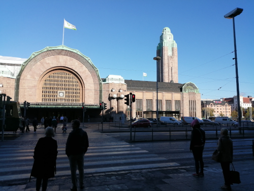
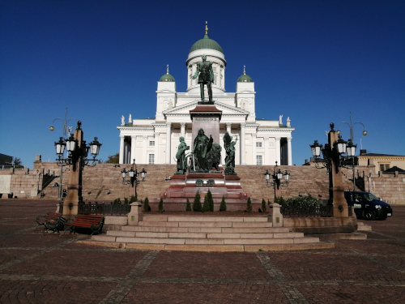
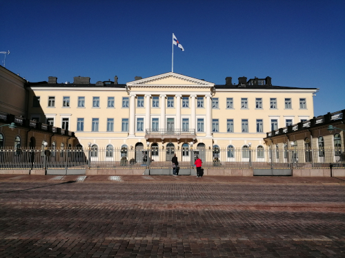
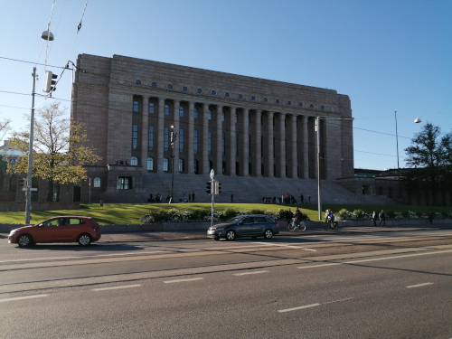
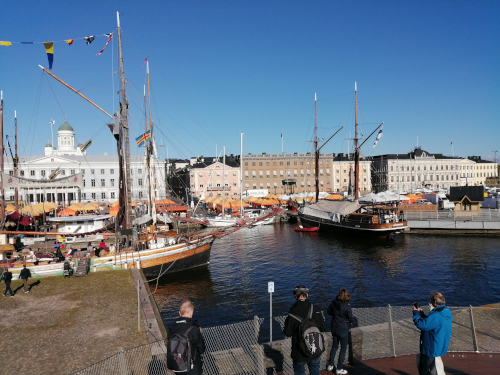
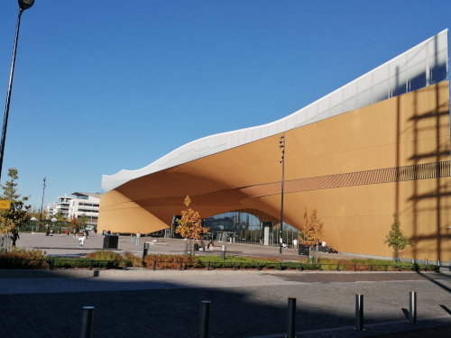

Etusivu
Nähtävyydet
Ruoka
Shoppailu
Kartta
Rautatieasema

Helsingin päärautatieasema.
Tuomiokirkko

Helsingin tuomiokirkko.
Presidentinlinna

Suomen tasavallan presidentin edustusasunto.
Eduskuntatalo

Eduskuntatalo Mannerheimintiellä.
Kauppatori

Kauppatori. Täältä saa voissa paistettuja muikkuja valkosipulikastikkeella :)
Oodi

Helsingin pääkirjasto Oodi.